правила дорожнього руху
У розділі 3, знаки, сигнали та дорожня розмітка, ви отримали інформацію про найпоширеніші знаки, сигнали та дорожню розмітку, які побачите під час водіння. Цей розділ дає інформацію, потрібну, щоб безпечно проїжджати перехрестя, правильно використовувати смуги й паркуватися законно.
Розуміння перехресть
Перехрестя — це місця, де перетинаються шляхи багатьох учасників дорожнього руху. На перехрестях часто дуже багато дій, тому важливо бути пильним. Пам’ятайте, що інші учасники дорожнього руху можуть спішити й можуть захотіти зайняти той самий простір, у який плануєте рухатися ви.
Подавання сигналів
Сигнали важливі — вони повідомляють іншим учасникам руху, що ви маєте намір зробити. Подавайте сигнал, коли готуєтеся:
- повернути ліворуч або праворуч
- змінити смугу
- припаркуватися
- рухатися до краю дороги або від нього.
Типи перехресть
Регульовані перехрестя
Регульоване перехрестя — це перехрестя, де є знаки або світлофори, які вказують вам, що робити. Щоб безпечно проїжджати такі перехрестя, вам потрібно знати значення сигналів і знаків, а також правила права переваги. Але завжди будьте обережні. Інші водії можуть не звертати уваги на знаки й сигнали.
Нерегульовані перехрестя
На нерегульованих перехрестях немає знаків чи світлофорів. Зазвичай вони бувають у місцях, де рух невеликий. Але вони можуть бути небезпечними, бо водії можуть не очікувати поперечного руху чи пішоходів.
Наближаючись, знижуйте швидкість і слідкуйте за іншими учасниками дорожнього руху. Оглядайте перехрестя зліва праворуч. Якщо інший транспортний засіб прибув на перехрестя раніше за вас, знижуйте швидкість і уступіть право переваги. Якщо два транспортні засоби прибувають одночасно, транспортний засіб ліворуч мусить уступити право переваги транспортному засобу праворуч.
Будьте обережні, коли хочете повернути ліворуч там, де назустріч наближається інший транспорт. Уступіть право переваги транспорту, який перебуває на перехресті або поблизу нього. Якщо ви маєте намір рухатися прямо, а транспортний засіб уже виконує на перехресті поворот ліворуч, ви повинні уступити право переваги.
Зупинка на перехрестях
Є правила щодо того, де розташовувати транспортний засіб, коли вам потрібно зупинитися на перехресті.
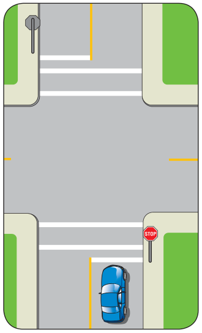
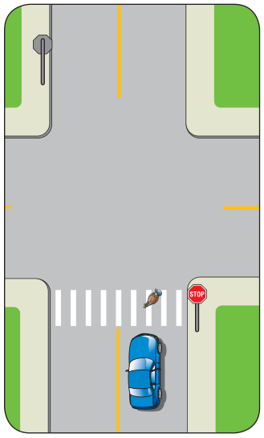
Якщо є лінія зупинки, зупиніться безпосередньо перед лінією.
Якщо є пішохідний перехід, але немає лінії зупинки, зупиніться безпосередньо перед переходом.
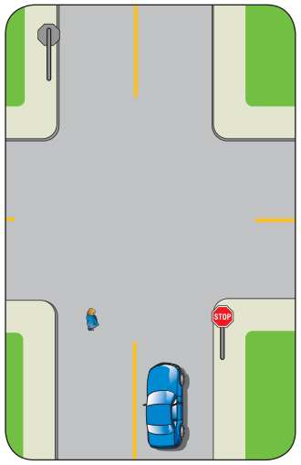
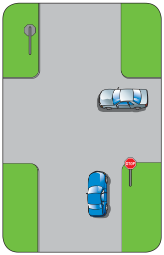
Якщо пішохідний перехід непозначений, зупиніться там, де зупинилися б, якби він був позначений.
Якщо немає ні лінії зупинки, ні пішохідного переходу, ні тротуару, зупиніться перед виїздом на перехрестя.
Право переваги на перехрестях
Правила права переваги визначають, хто повинен уступити, коли більш ніж один учасник дорожнього руху хоче зайняти той самий простір. Важливо знати ці правила, бо вони підтримують упорядкований рух транспорту. Але пам’ятайте, що ви не завжди можете розраховувати на те, що інша особа виконає правила. І навіть якщо ви маєте право переваги, ви все одно відповідаєте за те, щоб зробити все можливе для уникнення аварії.
Про правила права переваги на пішохідних переходах і залізничних переїздах див. розділ 6, спільне користування дорогою.
Перехрестя, регульовані світлофорами
Більшість людей знають, хто має право переваги на перехрестях, регульованих світлофорами, але можуть не розуміти, як правильно реагувати на ці сигнали. Ось кілька вказівок, які допоможуть вам бути в безпеці на перехрестях:
постійний червоний сигнал — червоний сигнал означає, що ви повинні повністю зупинитися. Ви повинні дочекатися зеленого сигналу, перш ніж рухатися прямо.
Після зупинки, переконавшись, що на перехресті немає транспортних засобів, велосипедистів і пішоходів, ви можете повернути праворуч або ліворуч на вулицю з одностороннім рухом. Звертайте увагу на знаки, що забороняють такі повороти на червоний сигнал.
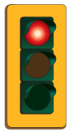
постійний зелений сигнал — зелений означає рухатися лише тоді, коли перехрестя вільне і це безпечно.
- затяжний зелений сигнал — затяжний зелений сигнал це той, що горить зеленим уже довго і скоро зміниться на жовтий. Якщо ви не бачили, як сигнал перемкнувся на зелений, він може бути затяжним. Шукайте додаткові підказки:
– чи багато автомобілів стоїть у черзі на поперечній вулиці, очікуючи зміни сигналу?
– у багатьох місцях сигнал для пішоходів змінюється з білої фігури на оранжеву долоню безпосередньо перед тим, як сигнал стане жовтим, або показує, скільки секунд залишилося до зміни світлофора.
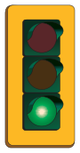
- точка неповернення — коли ви наближаєтеся до затяжного зеленого сигналу — з урахуванням вашої швидкості, стану дороги та транспорту позаду вас — визначте точку, після якої ви вже не зможете безпечно зупинитися. Її іноді називають точкою неповернення. Досягнувши цієї точки, продовжуйте рух, навіть якщо сигнал змінюється на жовтий. Вам потрібно оцінити це точно, щоб не опинитися на перехресті, коли сигнал стане червоним.
- свіжий зелений сигнал — свіжий зелений сигнал це той, що щойно змінився на зелений. Не рухайтеся вперед, поки не оглянете перехрестя й не переконаєтеся, що воно вільне.
- поворот ліворуч на постійний зелений сигнал — повертаючи ліворуч, ви повинні уступити право переваги транспорту, що рухається назустріч, і дочекатися безпечного інтервалу перед поворотом.
постійний жовтий сигнал — жовтий означає, що сигнал зараз зміниться на червоний. Ви повинні зупинитися перед в’їздом на перехрестя, якщо тільки не можете зупинитися безпечно й вчасно.
Іноді водії панікують, коли стоять на перехресті в очікуванні повороту ліворуч і сигнал змінюється на жовтий. У такій ситуації пам’ятайте, що за законом ви маєте право завершити поворот. Але уважно стежте за іншими транспортними засобами, особливо за водіями, що рухаються назустріч і намагаються проскочити на червоний сигнал.
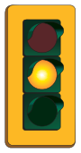
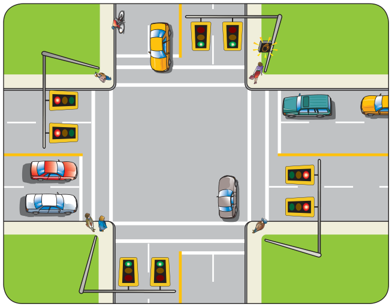
блимаючий зелений сигнал — стежте за пішоходами, які можуть увімкнути пішохідний світлофор, щоб сигнал змінився на жовтий, а потім на червоний. Навіть якщо пішохідний світлофор не увімкнено, транспорт на бічній вулиці стоїть перед знаком STOP і може очікувати виїзду на перехрестя, коли воно буде вільним і це буде безпечно.
Сигнали для повороту ліворуч
На деяких перехрестях є сигнали повороту із зеленими стрілками або призначені смуги, регульовані власним набором світлофорів, які дозволяють вам повернути ліворуч. Такі повороти називають захищеними. Поки показана зелена стрілка, ви захищені від транспорту, що рухається прямо, — для нього горить червоний сигнал.
окремий сигнал для повороту ліворуч — на деяких перехрестях є призначені смуги для повороту ліворуч, регульовані власним набором світлофорів. Зелена стрілка внизу окремого набору світлофорів покаже вам, коли повертати ліворуч. Транспорт на смугах руху прямо та повороту праворуч буде зупинено червоним сигналом на іншому наборі світлофорів.
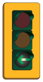
Коли зелена стрілка змінилася на жовту, ви повинні зупинитися й дочекатися наступної зеленої стрілки, перш ніж повертати.
сигнал повороту ліворуч на звичайних світлофорах — на інших перехрестях є смуги для повороту ліворуч, які не регулюються окремим набором світлофорів. Тут додаткова зелена стрілка розташована внизу звичайних світлофорів.
Блимаюча зелена стрілка дозволяє вам повернути ліворуч. Для руху прямо горить червоний сигнал.
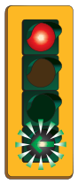
Коли зелена стрілка згасла і горить лише звичайний зелений сигнал, ви все одно можете повернути ліворуч. Але ви повинні уступити право переваги пішоходам і транспорту, що рухається назустріч.
Іноді ці додаткові зелені стрілки працюють лише в години пік.
блимаючі червоні сигнали — блимаючий червоний сигнал означає, що ви повинні повністю зупинитися. Після зупинки ви можете виїхати на перехрестя, коли воно вільне і це безпечно.
Перехрестя, регульовані знаками STOP
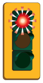
Знак STOP завжди означає, що ви повинні повністю зупинитися. Після зупинки уважно огляньте перехрестя. Чи рухатися вам, чи чекати, залежить від типу перехрестя та іншого транспорту навколо вас.
перехрестя з двома знаками STOP — якщо дві вулиці перетинаються і знаки STOP стоять лише на одній із них, то інша вулиця є головною. Транспорт на головній вулиці має право переваги. Якщо ви зупинилися на перехресті такого типу, дочекайтеся безпечного інтервалу, перш ніж проїжджати прямо або повертати.
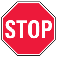
Якщо два транспортні засоби зупинилися на перехресті з двома знаками STOP і один із водіїв хоче повернути ліворуч, цей водій повинен уступити право переваги іншому транспортному засобу. Єдиний виняток — якщо транспортний засіб, що повертає ліворуч, уже перебуває на перехресті й почав виконувати поворот. У цьому разі уступити повинен інший транспортний засіб.
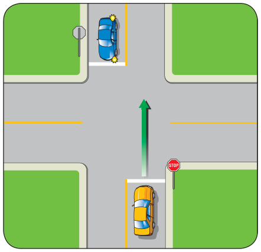
перехрестя з чотирма знаками STOP — коли знаки STOP стоять на всіх кутах:
- Транспортний засіб, який першим прибув на перехрестя й повністю зупинився, має рухатися першим.
- Якщо два транспортні засоби прибули одночасно, першим має рухатися той, що праворуч.
- Якщо два транспортні засоби стоять один навпроти одного й прибули на перехрестя приблизно одночасно, той, що повертає ліворуч, повинен уступити тому, що рухається прямо.
Перехрестя, регульовані знаками YIELD
Знак YIELD означає, що ви повинні дати право переваги транспорту на головній дорозі. Ви можете виїхати на перехрестя без зупинки, якщо на головній дорозі немає пішоходів, велосипедистів або транспортних засобів. Але ви повинні знизити швидкість (і зупинитися, якщо потрібно) та дочекатися безпечного інтервалу, якщо на головній дорозі є транспорт.
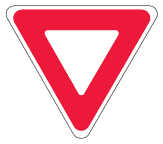
Кругові перехрестя та кільцеві розв’язки
Вони є в деяких районах, щоб допомогти транспорту безпечно проїхати перехрестя, не обов’язково зупиняючи транспортний потік.
Кругові перехрестя
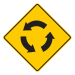
Кругові перехрестя найчастіше зустрічаються в житлових районах.
Коли ви користуєтеся круговим перехрестям:
- Знижуйте швидкість, наближаючись до кругового перехрестя.
- Виконуйте вимоги встановлених знаків регулювання руху, як-от знаків «YIELD» або «STOP». Якщо знаків регулювання руху немає, вважайте його нерегульованим перехрестям.
- Уступайте право переваги будь-якому транспорту на круговому перехресті. Якщо інший транспортний засіб прибуває на кругове перехрестя одночасно з вами, уступіть тому, що праворуч від вас.
- Об’їжджайте кругове перехрестя праворуч (тобто проти годинникової стрілки).
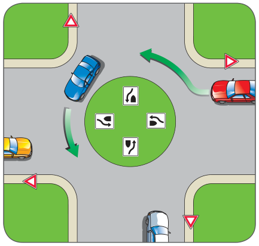
Кільцеві розв’язки
Кільцеві розв’язки зазвичай більші за кругові перехрестя.
Деякі кільцеві розв’язки мають більше ніж одну смугу. На підходах можуть бути встановлені знаки використання смуг і розмітка, які показують, куди можна рухатися з кожної смуги, коли ви на кільцевій розв’язці. Переконайтеся, що знаєте, куди хочете їхати, — і що перебуваєте в потрібній смузі, щоб туди дістатися, — перш ніж заїжджати на кільцеву розв’язку.
Навколо центрального острівця часто є розширення для вантажівок, щоб великі транспортні засоби могли проїхати розв’язку.
Коли ви користуєтеся кільцевою розв’язкою:
- Знайте, куди ви хочете рухатися, перш ніж заїхати на кільцеву розв’язку, і займіть правильну смугу. Знаки використання смуг або дорожня розмітка покажуть, яку смугу вам потрібно використати.
Якщо ви хочете повернути ліворуч, будьте в лівій смузі. Якщо хочете повернути праворуч, використовуйте праву смугу. Якщо хочете рухатися прямо, підійде і ліва, і права смуга.
- Знижуйте швидкість, наближаючись до кільцевої розв’язки.
- Уступайте право переваги пішоходам, які переходять або збираються переходити на пішохідному переході перед розв’язкою.
- Уступайте право переваги транспорту, що вже на розв’язці.
- Об’їжджайте кільцеву розв’язку проти годинникової стрілки. Не змінюйте смуги на кільцевій розв’язці.
- Не рухайтеся поряд з великими транспортними засобами, як-от вантажівками та автобусами, на кільцевих розв’язках. Їм може бути потрібно більше місця, ніж їхня смуга, щоб проїхати розв’язку.
- Якщо ви заїхали на розв’язку в лівій смузі, залишайтеся в цій смузі. З неї ви можете рухатися прямо або повернути ліворуч.
- Подавайте сигнал повороту праворуч, перш ніж виїхати.
Коли ви виїжджаєте з кільцевої розв’язки, будьте готові уступити право переваги пішоходам, які можуть бути на пішохідному переході на виїзді.
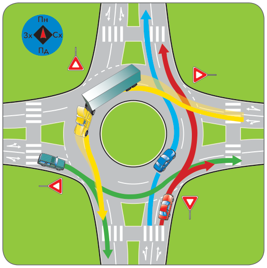
У прикладі вище червоний автомобіль заїхав на кільцеву розв’язку з півдня правою смугою, уступивши право переваги транспорту на розв’язці. Водій може або повернути праворуч на східному виїзді, або рухатися прямо й скористатися північним виїздом.
Синій автомобіль заїхав з півдня лівою смугою і влився в ліву смугу на розв’язці. Оскільки синій автомобіль заїхав з лівої смуги, водій не може відразу повернути праворуч на першому виїзді (східному), але може скористатися північним або західним виїздом.
Автопоїзд заїхав на кільцеву розв’язку зі сходу лівою смугою, і водій збирається скористатися південним виїздом. Зверніть увагу: через довжину автопоїзда напівпричіп частково перебуває у правій смузі, і автопоїзд виїжджатиме правою смугою.
Водій зеленого автомобіля повинен уступити право переваги автопоїзду, який уже на кільцевій розв’язці.
Виїзд на дорогу
Коли ви виїжджаєте з під’їзної дороги, провулку або парковки на дорогу, зупиніться перед тротуаром або місцем, де можуть іти пішоходи. Потім виїжджайте обережно, уступаючи право переваги транспорту на дорозі й чекаючи на безпечний інтервал.
Правильне використання смуг
У попередньому розділі ви дізналися про знаки, сигнали та дорожню розмітку, які показують, якими смугами можна рухатися. Цей підрозділ докладніше розповідає, які смуги використовувати і як це робити.
Яку смугу обрати?
Обирайте смугу, яка дає найкращий огляд і дозволяє рухатися туди, куди вам потрібно. На багатосмуговому шосе рухайтеся однією з правих смуг. Це особливо важливо, якщо ви їдете повільніше за інший транспорт або якщо знаки вказують не займати ліву смугу.
Те, що ви їдете з максимальною дозволеною швидкістю, не означає, що можна постійно рухатися лівою смугою. Через це інші водії можуть спробувати обігнати вас праворуч, а це може бути менш безпечно, ніж обгін ліворуч.
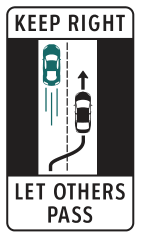
Коли ви на автомагістралі, де в кожному напрямку більше двох смуг, рухайтеся центральною смугою або однією з правих. Так ліва смуга залишається для швидшого транспорту та для обгону.
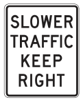
Траєкторія руху смугою
Перед поворотом потрібно вивести транспортний засіб на правильну смугу. Потім, завершивши поворот, ви маєте опинитися на правильній смузі. Це іноді називають траєкторією руху смугою.
Повороти праворуч
На цих ілюстраціях показано траєкторію руху смугою під час повороту праворуч.
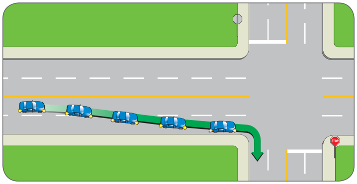
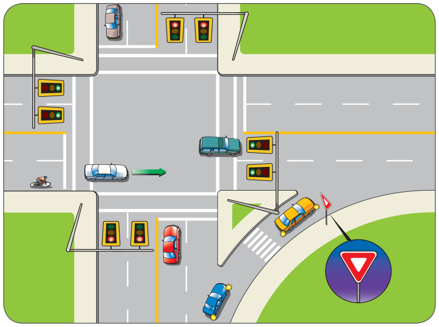
Повороти ліворуч
Під час повороту ліворуч іноді важче визначити, у яку смугу повертати. Ці ілюстрації показують правильну траєкторію руху смугою для різних типів доріг.
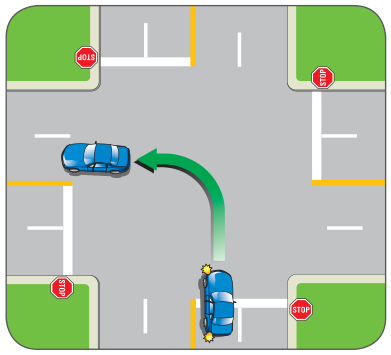
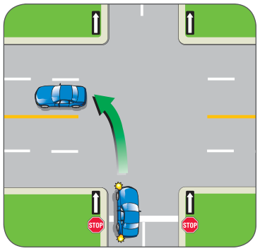
Поворот ліворуч з односторонньої дороги на двосторонню: повертайте з лівої смуги в центральну смугу.
Поворот ліворуч із двосторонньої дороги на двосторонню: виведіть транспортний засіб у центральну смугу і плавною дугою в’їжджайте в центральну смугу поперечної вулиці.
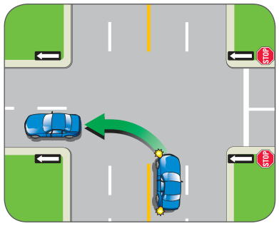
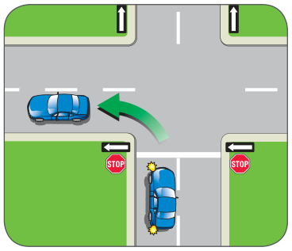
Поворот ліворуч з односторонньої дороги на односторонню: повертайте з лівої смуги в ліву смугу.
Поворот ліворуч із двосторонньої дороги на односторонню: повертайте з центральної смуги в ліву смугу.
Смуги для повороту
На деяких дорогах є спеціальні смуги для повороту. Наближаючись до перехрестя, завжди перевіряйте знаки та дорожню розмітку, щоб переконатися, що ви на правильній смузі для повороту або для руху прямо.
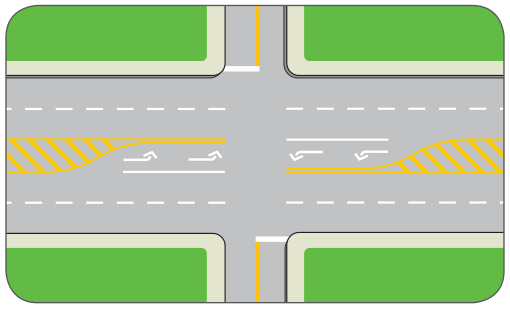
Кілька смуг для повороту
На великих складних перехрестях смуг для повороту праворуч або ліворуч може бути кілька. Уважно дивіться на дорожню розмітку, знаки використання смуг і сигнали. Вони підкажуть, що робити.
Наприклад, знак, показаний у лівій колонці, повідомляє, що і крайня ліва смуга, і смуга поруч із нею використовуються для поворотів ліворуч. Якщо ви повертаєте з крайньої лівої смуги, повертайте на крайню ліву смугу. Якщо ви повертаєте зі смуги поруч із нею, повертайте на смугу поруч із крайньою лівою.
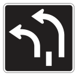
Двосторонні смуги для повороту ліворуч
Двосторонні смуги для повороту ліворуч дають транспортним засобам, що рухаються з будь-якого напрямку, змогу повернути ліворуч, не затримуючи потік. Вони зручні для повороту ліворуч посередині кварталу, наприклад для заїзду на під’їзну дорогу. Побачивши таку смугу, пам’ятайте, що транспортні засоби з протилежного напрямку також використовують її для поворотів ліворуч.
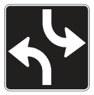
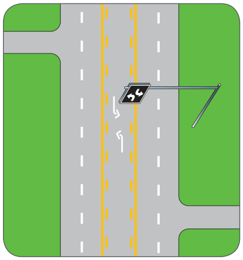
Повороти посередині кварталу
Більшість водіїв очікує, що інші транспортні засоби повертатимуть на перехресті. Іноді вам може знадобитися повернути ліворуч посередині кварталу — наприклад, на під’їзну дорогу. Ви можете повернути ліворуч — навіть через суцільну подвійну жовту лінію — якщо робите це уважно й безпечно, не перешкоджаєте іншому руху і немає знаків, які забороняють такі повороти.
Розвороти
Якщо ви виявили, що їдете в неправильному напрямку, у вас може виникнути спокуса зробити розворот. Розвороти часто ризиковані. Вони заборонені:
- якщо вони перешкоджають іншому руху
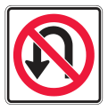
- на закруті дороги
- на вершині підйому або біля неї, де інший транспорт не бачить вас у межах 150 метрів
- де знак забороняє розворот
- на перехресті, де є світлофор
- у діловому районі, окрім перехрестя, де немає світлофора
- де муніципальний підзаконний акт забороняє розворот.
Вирішуючи, чи робити розворот, подумайте про альтернативи — наприклад, об’їхати квартал або продовжити рух до бічної дороги, де можна повернути безпечніше.
Зарезервовані смуги
У деяких частинах B.C. окремі смуги зарезервовані для певних типів транспорту. Смуги для транспорту з високим заповненням (HOV) і смуги для автобусів дають змогу перевозити більше людей меншою кількістю транспорту. Велосипедні смуги — для велосипедистів.
Смуги для транспорту з високим заповненням (HOV)
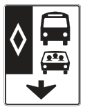
Смуги HOV зарезервовані для автобусів і транспортних засобів зі спільними поїздками. На деяких дорогах цими смугами можуть також користуватися мотоцикли, велосипеди й таксі. На автомагістралях і головних шосе смуги HOV розташовані або біля розділової смуги, або біля узбіччя дороги. На міських вулицях смуги HOV зазвичай розташовані безпосередньо біля бордюру.
Більшість смуг HOV працює 24 години на добу, але деякі діють лише в години пік. Уважно перевіряйте дорожні знаки. Вони підкажуть, де смуги починаються й закінчуються, коли вони діють і яка мінімальна кількість людей має бути в транспортному засобі.
Якщо у вашому транспортному засобі достатньо людей, щоб рухатися смугою HOV, або якщо вам потрібно перетнути смугу HOV для повороту, заїжджайте на смугу обережно. Транспорт на цих смугах іноді рухається швидше за звичайний потік. Переконайтеся, що місця для безпечного заїзду достатньо. Заїжджайте та виїжджайте там, де перервані лінії позначають місце перетину.
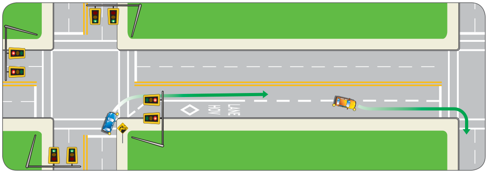
Водій синього автомобіля побачив попереджувальний знак про те, що на вулиці, куди він хоче повернути, є зарезервована смуга. Водієві слід повернути на смугу, суміжну із зарезервованою, якщо він не має права рухатися зарезервованою смугою і не бажає нею їхати.
Щоб повернути праворуч із вулиці, яка має зарезервовану смугу, перейдіть на зарезервовану смугу там, де це дозволено і коли це безпечно.
Смуги для автобусів
Смугу для автобусів можна розпізнати за знаком із ромбом і зображенням автобуса. Смугами, позначеними цим знаком, дозволено рухатися лише автобусам, а іноді й велосипедистам.
Ванпули (транспортні засоби з шістьма або більше людьми в салоні) також можуть рухатися смугою для автобусів, якщо під знаком смуги для автобусів розміщена табличка «Vanpool Permitted».
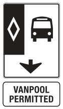
Велосипедні смуги
Велосипедні смуги зарезервовані для велосипедистів. Іноді вам потрібно буде перетнути велосипедну смугу, щоб повернути праворуч або притиснутися до краю дороги. Робіть це особливо уважно. Правила для велосипедних смуг такі:
- не їдьте, не зупиняйтеся й не паркуйтеся на велосипедній смузі.
- перетинати велосипедну смугу можна лише там, де біла лінія перервана, або щоб заїхати на під’їзну дорогу чи виїхати з неї.
Виїзд на смугу
Щоразу, коли ви заїжджаєте на смугу — виїжджаючи в потік чи змінюючи смугу — транспортні засоби на смузі, куди ви переходите, мають право переваги. Коли ви від’їжджаєте від краю дороги на смугу руху, потрібно переконатися, що ви не підрізаєте
нікого. Уважно стежте за меншими учасниками руху — велосипедами й мотоциклами — які можуть наближатися швидше, ніж вам здається.
Те саме правило діє, коли ви плануєте змінити смугу. Переконайтеся, що інтервал достатньо великий, щоб водій, перед яким ви заїжджаєте, не мусив знижувати швидкість, аби не зіткнутися з вами. За законом ви повинні подавати сигнал, коли змінюєте смугу.
Обгін
Обгін вимагає переходу на іншу смугу — іноді на смугу транспорту, що рухається назустріч — і потім повернення на свою початкову смугу. Пам’ятайте: якщо ви заїжджаєте на смугу іншого транспортного засобу, право переваги має цей транспортний засіб. Не має значення, чи це автомобіль, мотоцикл, чи велосипед. Інші учасники руху не повинні змінювати напрямок або знижувати швидкість через вас.
Якщо ви плануєте обгін, переконайтеся, що можете виконати його безпечно й законно:
- Обгін праворуч виконуйте лише на дорозі, яка має дві або більше смуги, або якщо водій попереду повертає ліворуч. Не використовуйте узбіччя для обгону.
- Обгін ліворуч виконуйте лише тоді, коли це безпечно і коли дозволяє дорожня розмітка.
- Під час обгону не перевищуйте обмеження швидкості.
- Переконайтеся, що ви знаєте, чи дозволяє дорожня розмітка виконувати обгін. Докладніше див. розділ 3, знаки, сигнали та дорожня розмітка.
Смуги для обгону
Деякі шосе мають спеціальні смуги для обгону. Ці смуги дають повільнішим транспортним засобам перейти на праву смугу, щоб швидші могли безпечно обігнати їх лівою смугою.
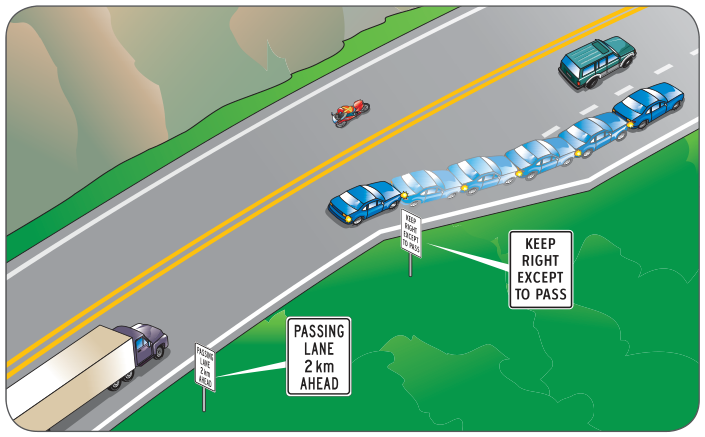
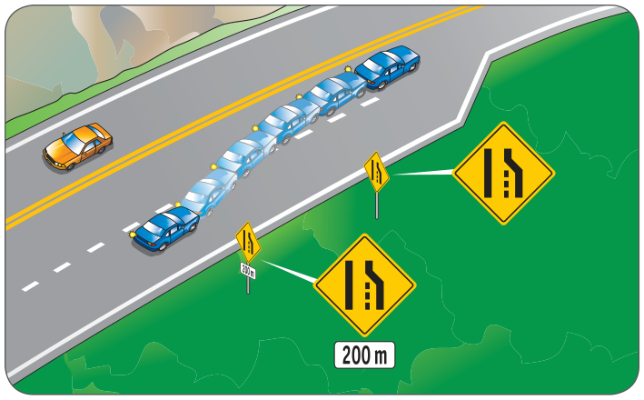
Вливання в потік
Цей знак означає, що права смуга скоро закінчиться.
Якщо ви рухаєтеся смугою, яка закінчується попереду, вам потрібно змінити смугу. Скоригуйте швидкість, не перевищуючи обмеження швидкості, і дочекайтеся безпечного інтервалу в іншій смузі.
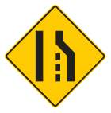
Якщо ви рухаєтеся поряд зі смугою, що закінчується попереду, допоможіть транспорту влитися: скоригуйте швидкість або змініть смугу.
В’їзди та виїзди шосе або автомагістралі
Ці смуги створені, щоб допомогти вам безпечно виїхати на автомагістраль і покинути її.
В’їзд
В’їзд складається з в’їзної рампи, смуги розгону та зони вливання. На деяких в’їздах на автомагістраль є регулятори в’їзду — світлофори, які керують транспортом, що виїжджає на автомагістраль, обмежуючи кількість транспортних засобів, які можуть рухатися в’їзною рампою.
- Поки ви на в’їзній рампі, оглядайте потік на автомагістралі, шукаючи безпечний інтервал.
- Смуга розгону відокремлена від решти дороги суцільною білою лінією. Використовуйте цю смугу, щоб зрівняти свою швидкість зі швидкістю потоку на автомагістралі.
- Зона вливання відокремлена від автомагістралі перерваною білою лінією. Використовуйте цю зону, щоб знайти безпечний інтервал для вливання в потік автомагістралі. Пам’ятайте, що на деяких автомагістралях дозволено рух велосипедів, тож будьте обережні й не підрізайте велосипедиста.
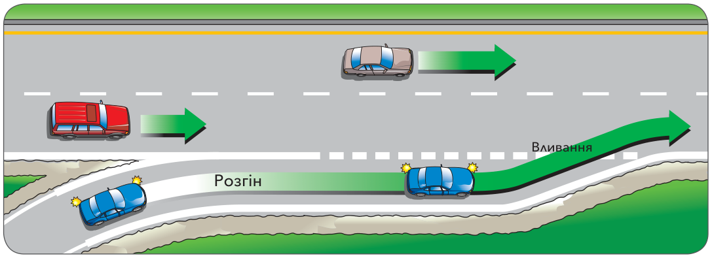
В’їзд на шосе дає вам коротку відстань, щоб зрівняти свою швидкість зі швидкістю транспортних засобів, які вже рухаються шосе. Спостерігайте за потоком на автомагістралі, переконайтеся, що є простір, у який безпечно переміститися, подайте сигнал про свій намір і потім влийтеся в потік.
Виїзд
Смуга виїзду дозволяє вам покинути автомагістраль і зменшити швидкість.
Більшість виїздів з автомагістралі мають номери. Перед початком поїздки перегляньте карту, щоб дізнатися, який виїзд вам потрібен. Так ви зможете заздалегідь перейти в праву смугу перед виїздом.
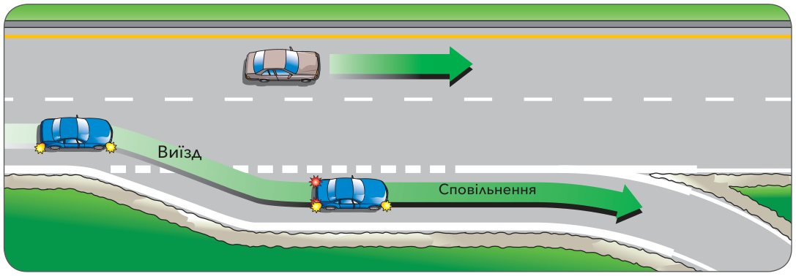
Подайте сигнал про свій намір з’їхати з шосе, зберігаючи швидкість, поки не в’їдете у смугу виїзду. Потім поступово сповільнюйтеся, готуючись виїхати на дороги з нижчими обмеженнями швидкості.
Тупикові вулиці
Тупикова вулиця — це вулиця, закрита з одного боку. Більшість тупикових вулиць спроєктовані так, щоб ви могли розвернути автомобіль, не даючи задній хід. Знижуйте швидкість і тримайтеся праворуч. Більшість тупикових вулиць розташовані в житлових районах, тому уважно стежте за дітьми, які граються, транспортними засобами, що виїжджають з під’їзних доріг, та іншими небезпеками.
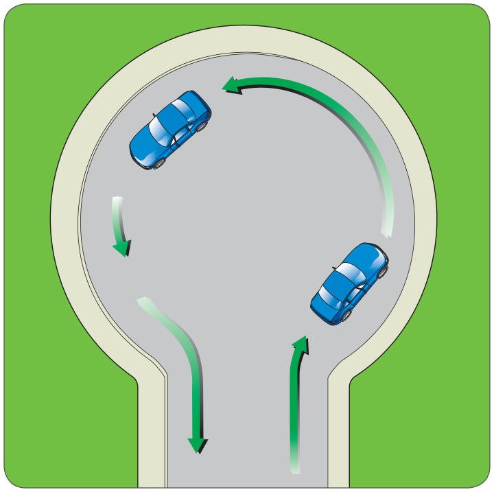
Зміна напрямку руху
Іноді змінити напрямок руху можна серією поворотів на перехрестях або розворотом на тупиковій вулиці. Ви також можете виконати розворот, розворот у два приймання або розворот у три приймання.
Розворот у два приймання виконують так: зупиняються біля краю дороги, заїжджають задним ходом на під’їзну дорогу, а потім виїжджають на вулицю, щоб рухатися у протилежному напрямку.
Розворот у три приймання виконують так: посередині кварталу роблять крутий поворот ліворуч і зупиняються безпосередньо перед бордюром. Щоб завершити розворот у три приймання, дають задній хід праворуч, а потім рухаються вулицею у протилежному напрямку.
Виконуючи розворот у два або три приймання, ви повинні переконатися, що дорога вільна й безпечна і що поблизу немає іншого транспорту.
Поради та правила паркування
Паркуйтеся там, де це безпечно й законно. Знаки, розмітка на бордюрі та здоровий глузд підкажуть, чи можна там паркуватися. Паркуйтеся так, щоб не перешкоджати руху і щоб інші вас добре бачили. Якщо ви припаркуєтеся там, де не можна, ви можете створити небезпеку для інших, отримати штраф, або ваш транспортний засіб можуть відбуксирувати.
Паркуватися заборонено:
- на тротуарі або на придорожньому газоні
- перекриваючи в’їзд на будь-яку під’їзну дорогу, у задній провулок або на перехрестя
- ближче ніж за п’ять метрів від пожежного гідранта (відлік від точки на бордюрі біля гідранта)
- ближче ніж за шість метрів від пішохідного переходу або перехрестя
- ближче ніж за шість метрів від знака STOP або світлофора
- ближче ніж за 15 метрів від найближчої рейки залізничного переїзду
- на велосипедній смузі
- на мосту або в тунелі шосе
- там, де ваш транспортний засіб закриває видимість дорожнього знака
- там, де дорожній знак забороняє паркування, або де бордюр пофарбовано в жовтий чи червоний колір
- на місці для осіб з інвалідністю, якщо ви не розмістили на лобовому склі дозвіл на паркування для осіб з інвалідністю і у вашому транспортному засобі не їде особа з інвалідністю.
Паркуйтеся паралельно бордюру, не далі ніж 30 сантиметрів (один фут) від нього. Якщо ви припаркувалися на схилі, поверніть колеса так, щоб транспортний засіб не скотився в потік. Повертайте колеса:
- праворуч — на підйомі без бордюру або на спуску з бордюром чи без нього
- ліворуч — на підйомі з бордюром.
Затягніть стоянкове гальмо і залиште автомобіль на передачі:
- автоматичну коробку передач залиште в положенні «park» (стоянка)
- з механічною коробкою передач увімкніть «reverse» (задній хід), якщо автомобіль стоїть носом униз, і «first» (перша передача), якщо носом угору або на рівній поверхні.